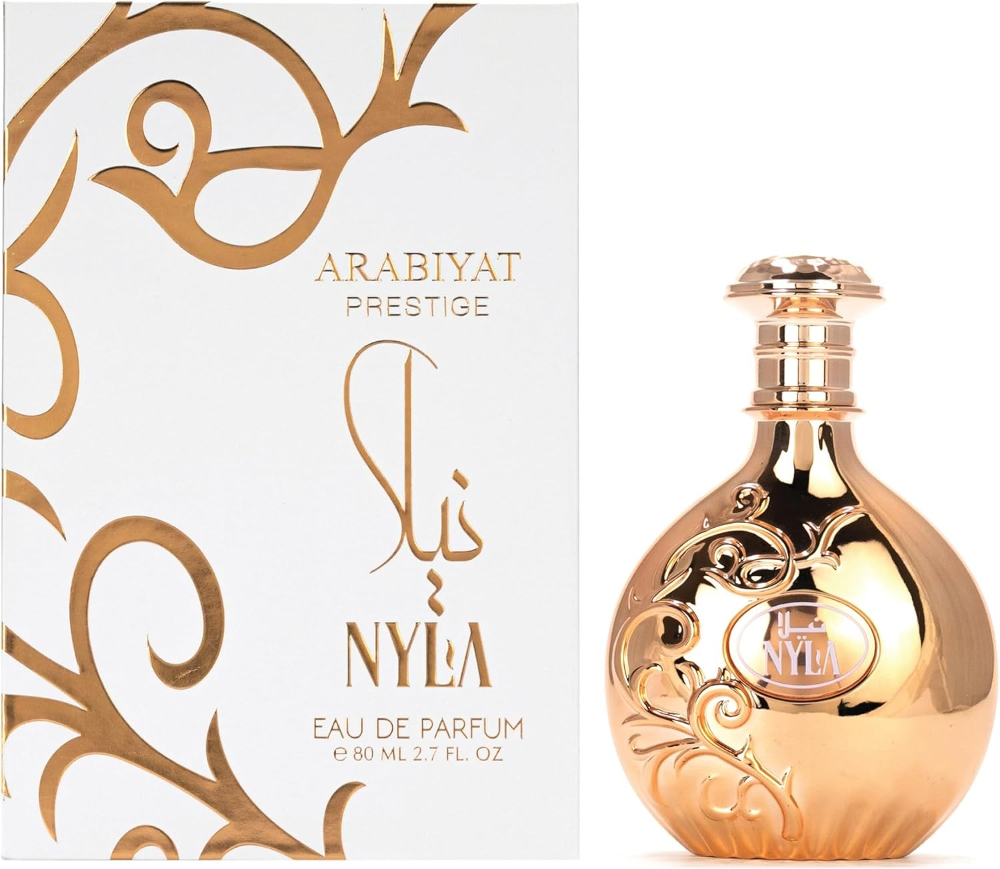

Sun-drenched, floral, and quietly addictive — Nyla by Arabiyat Prestige is one of those fragrances that's hard to place but impossible to ignore.Launched in 2024, Nyla opens with coconut, bergamot, mandarin, and peach Fragrantica — a bright, tropical burst that feels immediately warm and inviting. The heart blooms into tiare, jasmine, rose, and white flowers, adding an exotic floral softness that keeps the sweetness from ever tipping over into excess. The base settles into white musk and patchouli, providing a warm, sensual foundation that ensures the fragrance lingers throughout the day. AmazonThe overall effect is creamy, airy, and effortlessly wearable — think sun-warmed skin, white flowers, and a hint of tropical fruit rather than anything sharp or synthetic. It wears close to the skin, leaving the kind of subtle trail that makes people lean in rather than step back.Listed as unisex and genuinely wearing that way — the floral-tropical combination has enough freshness and softness to suit anyone drawn to warm, skin-like fragrances. An easy daily wear for spring and summer, and a mood-lifter when the seasons are less cooperative.
WHY WE CARRY THIS
Nyla caught our attention because it does something a lot of fragrances at this price point don't — it smells considered. The coconut-peach opening is bright without being loud, the white floral heart has genuine elegance to it, and the musk dry-down is soft and skin-close in a way that feels more expensive than the price tag suggests.
It's also genuinely unisex in a way that makes it useful. It sits in that sweet spot between tropical freshness and floral warmth that works on anyone, which makes it a reliable recommendation when customers aren't sure what they're looking for.
A solid warm-weather fragrance that earns its place in the lineup.
| Product Name | Arabiyat Prestige Nyla |
| Concentration | Eau de Parfum (EDP) |
| Size | 80ml |
| Fragrance Family | Fruity Floral |
| Gender | Unisex |
| Top Notes | Coconut, Peach, Bergamot, Mandarin |
| Heart Notes | Tiare, Jasmine, Rose, White Flowers |
| Base Notes | White Musk, Patchouli |
| Best For | Daytime wear, spring/summer, casual and smart-casual occasions |
| Launched | 2024 |
| Origin | UAE |